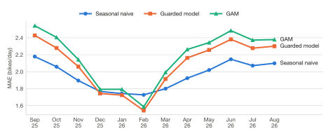
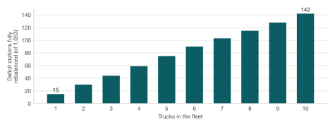

What the tool shows, what the data can and cannot support,
and where it could go next.
Live app: nyc-citibike-rebalancing.vercel.app
Code and data: github.com/rezataeb/nyc-citibike-rebalancing
Prepared: October 2026 · Independent portfolio project · public data only.
Not an official NYC DOT or Lyft product.
About the numbers: every figure in this report is read from the project's
committed data files at build time (report/build_report.py), not typed in by hand.
1. Summary
An empty or full bike-share station is more than an operations nuisance. A rider who
finds no bike, or no dock, may stop treating bike share as a real option. This tool shows where
and when that happens, how reliable stations have actually been, and what a fixed truck fleet
could realistically fix.
Stations were unusable {{rel_unusable_rate}} of the time. That is the share of
{{rel_n_obs}} station observations with 0 bikes or 0 docks, from {{rel_start}} to {{rel_end}}.
Full stations outnumbered empty ones about {{rel_full_to_empty}} to 1.
Bigger stations are associated with better reliability. After accounting for demand,
stations with 40+ docks were unusable about {{cap_gap_points}} percentage points less often than
stations with under 20 docks. This is a pattern in observational data, not proof of cause.
A simple baseline beat the machine-learning models. Over {{n_folds}} walk-forward
test months, a seasonal-naive forecast had the lowest error (MAE {{mae_naive}} bikes/day, vs.
{{mae_guarded}} for the guarded model). The dashboard is honest about this rather than
presenting the more complex model as better.
Trucks alone cannot close the gap. In the fleet simulator, {{fleet_max_trucks}} trucks
fully rebalanced {{fleet_max_serviced}} of {{fleet_n_deficit_flagged}} deficit stations ({{fleet_max_share}})
under a fixed morning baseline.
Some questions cannot be answered with public data. A dock-capacity
"what if" sandbox was investigated and closed, because station capacity over time was never
recorded (Section 5.2).
2. The problem
Bike share only works as a transportation mode if it is reliably there. When a station is
empty, a rider cannot start a trip. When it is full, a rider cannot end one, and has to ride on
to find a dock. Both failures push people toward other modes. If they happen often at the stations
serving a neighborhood, bike share stops being a real choice for the people who live there.
That makes station imbalance an access question, not only a logistics one.
The City's Citi Bike contract, as summarized in the NYC Comptroller's review
Riding Forward, requires stations not to sit completely full or empty, with the penalty
applying only when adjacent stations are also unavailable. The tool is built for the oversight and
planning side of that relationship. Lyft, the operator, decides how its own trucks run; this tool
helps a reviewer at NYC DOT see where imbalance concentrates, how reliable stations have been, who is
affected, and what a given fleet could realistically cover.
Who it is for
NYC DOT Bike Share & Shared Mobility reviewers, and anyone checking reliability claims against
public data. It is a static web page with precomputed data: no account, no backend, and a $0 stack.
3. Data and methods
3.1 Sources
Layer
Source
Coverage used here
Trips
Citi Bike S3 trip archives
{{trip_n_months}} months, {{trip_first_month}} – {{trip_last_month}};
{{n_stations}} stations ({{n_stations_full}} with every month covered)
Station status
Citi Bike GBFS feed
Logged by a scheduled GitHub Action; {{rel_snapshots}} snapshots,
{{rel_start}} – {{rel_end}}, on {{rel_days_with_data}} days. Also read live by the dashboard.
NYCHA developments
NYC Open Data phvi-damg
{{nycha_records}} records; {{nycha_threshold_m}} m proximity
Schools
NYC Open Data wg9x-4ke6
{{school_records}} records (2019–2020 locations); {{school_threshold_m}} m proximity
Subway stations
NY State Open Data i9wp-a4ja
{{subway_records}} records; {{subway_threshold_m}} m subway-gap distance
Weather
Open-Meteo historical archive
Daily temperature and precipitation for 18 fixed zones (a 6 km grid)
3.2 Quality rules (fixed)
Trips under 60 seconds or over 4 hours are dropped.
Low-volume stations are excluded from forecasting and typology clustering.
Offline stations are excluded from failure denominators: a station that is switched off is
not counted as "empty" or "full".
3.3 Methods, plainly
Net flow
Arrivals minus departures per station, by hour, for weekdays and weekends, by season and month.
Negative means the station drains; positive means it fills.
Station typology
K-means clustering of each station's weekday hourly shape. k = {{typology_k}} had the best
silhouette score ({{typology_silhouette}}): {{n_commuter_core}} "commuter core" stations (fill in the
morning, drain in the evening) and {{n_residential_feeder}} "residential feeder" stations (the reverse).
{{n_low_signal}} stations had too little traffic to cluster.
Demand forecast
Three tiers compared honestly: a seasonal-naive baseline, a spline-based GAM, and a gradient-boosted
model with an extrapolation guard that falls back to simpler tiers outside the training temperature range.
Validated by {{n_folds}}-fold walk-forward testing (each month held out in turn), not a single split.
Reliability rate
Share of online station observations in the GBFS log with 0 bikes or 0 docks. A frequency, not
outage hours (see Section 5.1).
Capacity vs. reliability
Ordinary least squares: unusable rate ~ capacity + log(1 + demand), across stations.
Fleet simulator
Greedy truck routing over the morning deficit/surplus baseline. Each truck carries
{{fleet_capacity}} bikes and makes at most {{fleet_max_stops}} stops. Ten scenarios, 1 to 10 trucks.
Equity context
Distance from each station to the nearest NYCHA development, school, and subway station. Of
{{n_stations}} stations, {{n_near_nycha}} are within {{nycha_threshold_m}} m of NYCHA,
{{n_near_school}} within {{school_threshold_m}} m of a school, and {{n_transit_gap}} are
{{subway_threshold_m}} m or more from a subway station.
4. Findings
4.1 How often stations were unusable
Across {{rel_n_obs}} online station observations, stations had 0 bikes or 0 docks
{{rel_unusable_rate}} of the time ({{rel_n_unusable}} observations).
{{rel_n_offline}} offline observations were excluded. The window runs from {{rel_start}} to {{rel_end}}:
midsummer into fall (Section 5.1).
Full is the bigger problem. {{rel_n_full}} observations were full and {{rel_n_empty}}
were empty, about {{rel_full_to_empty}} to 1. A full station blocks the end of a trip, which is
arguably worse for a rider than an empty one: they are already on a bike with nowhere to leave it.
The burden is uneven. Among {{rel_n_rankable}} stations with at least {{rel_min_obs}}
observations, the median station was unusable {{rel_median_station_rate}} of the time; the worst was
unusable {{rel_max_station_rate}} of the time.
4.2 Capacity and reliability
Across {{cap_n_stations}} stations, after controlling for demand, each extra dock is associated with an unusable rate about
{{cap_coef_points_per_dock}} percentage points {{cap_direction}} (standard error
{{cap_se_points_per_dock}}). Over a {{cap_gap_docks}}-dock difference, that is about
{{cap_gap_points}} points.
Station size
Stations
Mean unusable rate
{{cap_band1_label}}
{{cap_band1_n}}
{{cap_band1_rate}}
{{cap_band2_label}}
{{cap_band2_n}}
{{cap_band2_rate}}
{{cap_band3_label}}
{{cap_band3_n}}
{{cap_band3_rate}}
Raw band means, before the demand control. The regression above is the adjusted result.
Pattern, not proof
This compares different stations at one point in time. It does not show that adding docks to a
given station would make it more reliable. Borough and zone are not in the pipeline, so location is
not controlled for.
4.3 Forecasting: the simple baseline won
Mean absolute error across {{n_folds}} walk-forward folds: seasonal naive {{mae_naive}},
guarded model {{mae_guarded}}, GAM {{mae_gam}} bikes/day. Naive's advantage is statistically significant
(Wilcoxon signed-rank, p = {{p_guarded_vs_naive}} vs. guarded and p = {{p_gam_vs_naive}} vs. GAM).
The guarded model did win {{guarded_win_months}}; naive won the other {{n_naive_wins}} months.

Forecast error by held-out month. Lower is better.
The practical reading: for a station's typical flow at a given hour, its own historical average
for that hour and day type is hard to beat. The models only pulled ahead in the coldest months. The dashboard therefore shows historical patterns as the main view and labels the
model comparison openly, instead of presenting a model forecast as the answer.
4.4 What a truck fleet can cover
The morning baseline flags {{fleet_n_deficit_flagged}} deficit stations and
{{fleet_n_surplus_flagged}} surplus stations. One truck fully rebalances {{fleet_one_truck}} deficit
stations; {{fleet_max_trucks}} trucks rebalance {{fleet_max_serviced}} ({{fleet_max_share}}).
Every truck in every scenario hits the {{fleet_max_stops}}-stop cap, so the binding limit is stops per
shift, not a lack of stations needing work.

Deficit stations fully rebalanced, by fleet size (cumulative).
For a planner this points beyond trucks: where imbalance is structural and recurs every day,
station size and placement may matter as much as rebalancing, which is why the capacity result (4.2)
is worth testing further.
5. Limitations
These are the real limits of what this tool can claim. Most are also stated in the
dashboard or the repository, near the number they affect.
5.1 GBFS sampling resolution
The reliability numbers come from {{rel_snapshots}} snapshots taken over {{rel_days}} days
({{rel_start}} – {{rel_end}}). {{rel_days_with_data}} of those days have data. The median gap between
snapshots is {{rel_median_gap_min}} minutes. The longest gap, {{rel_max_gap_days}} days
({{rel_gap_start}} – {{rel_gap_end}}), is when the log file hit GitHub's 100 MB limit and the scheduled
job could not save new snapshots until it was fixed.
A correction: an earlier build of these numbers covered only July 13–26 but was labeled
"July 13 – September 13". It was found while writing this report and rebuilt from the full log on
October 28, 2026. The dashboard now states how many days have data and names the longest gap.
A rate, not a duration. We can say how often a station was found unusable. We
cannot say for how many minutes. A 15-minute outage can start and end between two snapshots and
never be seen.
Not the contract measure. The contract's 60- and 120-minute thresholds cannot be
resolved from snapshots this far apart. Nothing here is a penalty calculation.
Summer and fall only. Winter and spring reliability are not measured yet, and
the capacity result in 4.2 rests on the same window.
5.2 Dock capacity sandbox (Phase 5): closed, not viable
What it was. The original plan named a "dock capacity sandbox": pick a station,
change how many docks it has, and see how its risk of running empty or full would change. A
planning tool for real capacity decisions.
What was investigated. Two things, against the real snapshot log
(2,440,748 rows, 2,481 stations, as of September 13, 2026):
Can the log measure outage duration? Partly. When a station was caught unusable and had
another reading within 70 minutes, it was still unusable 67.9% of the time
(135,563 of 199,552). Outages tend to persist. But short outages are missed between polls, so any
minutes-based estimate would be biased long.
Is there any record of a station's capacity changing? No. The logger recorded bikes and
docks available, but never the capacity field itself. The obvious proxy, bikes + docks,
appears to vary at 92% of stations, but that is docks going temporarily out of service, not stations
being resized. One checked station's proxy moved between 16 and 20 across 981 snapshots while its
true capacity stayed 19. No public third-party archive of capacity history was found either; the
Comptroller's own GBFS project has the same gap.
Decision. Closed as not viable, not deferred. The input the feature needs, capacity
changing at the same station over time, was never collected, and real resizing is too rare to collect
enough of in any realistic timeframe. The persistence finding (about 2 in 3 outages still present an
hour later) is kept and shown in the dashboard's Live Docks data notes.
The alternative. The closeout named a different question that public data
can answer: do stations that already differ in capacity differ in reliability, network-wide,
once demand is held constant? That cross-sectional comparison was later built, and it is the result
in Section 4.2. It answers "what is associated with reliability," not "what would happen if this
station were resized."
Full write-up: docs_v2/phase5-closeout.md.
5.3 Live mode caveats
An instant reading. Live Docks shows the GBFS feed at the moment the page loads
(refreshed every 60 seconds). "Service availability" and "double-outage" are point-in-time
approximations, not the contract's 60-minute measurement.
"Adjacent" is this project's definition. A double-outage is a station with 0 bikes
or 0 docks that has another such station within 500 m. The 500 m radius is a project choice, not the
contract's, and the dashboard says so.
Some stations drop out. Stations with no live match, a capacity of 0, or not both
renting and returning are excluded from live counts, and the excluded count is shown.
Capacity exists only in live mode. Per-station capacity comes from the live
station_information feed. The capacity analysis in 4.2 therefore pairs today's capacity
with a past reliability window. Capacity rarely changes (5.2), so the risk is small but real.
The truck list is a fixed baseline. Priority truck stops come from the historical
morning baseline and do not change with live conditions.
5.4 Other limitations
No borough or zone control. The capacity analysis controls for demand only.
Weather scenarios are elasticities, not a weather model. They scale historical flow
by fitted temperature and precipitation sensitivities. A heat-wave preset was left out because the fit
does not support extrapolating that far.
School locations are from 2019–2020. It was the only coordinate-bearing school dataset
on NYC Open Data when checked.
Truck routing is a sketch. No real depot locations are public, so each tour starts
at the largest surplus station. The {{fleet_max_stops}}-stop cap is a rough shift estimate, not a
time or distance model.
Trips show demand that was served, not demand that was lost. A rider who gave up
at an empty station leaves no trip record, so the trip data undercounts demand exactly where
reliability is worst.
Associations, not causes. Typology, equity proximity and the capacity result describe
patterns. None of them is a causal estimate.
6. Future steps
Ordered by value to a DOT reviewer per unit of effort. None of these is built yet.
Refresh reliability on a schedule. The logger keeps adding snapshots on the
data-snapshots branch, but pipeline/reliability.py only runs by hand. A weekly
job that re-runs it and pipeline/reliability_capacity.py would keep the dashboard's window
current, and by spring would allow a first seasonal comparison. Low effort, high value.
Log the full station_information response on every poll. This is what
the Comptroller's project does. It would start a real capacity history going forward, so the gap in 5.2
cannot happen again for any other field.
Poll more often. Snapshots every 10–15 minutes would let the log approach the contract's
60-minute threshold and estimate outage durations, not only rates. This trades off against repository size
and GitHub Actions scheduling delays.
Add borough and community district. Joining NYC Open Data boundary files would add the
missing location control to the capacity analysis and let results be reported by community district.
Cross-check against operator reports. Compare the measured unusable rates with Citi Bike's
published monthly operating reports, to see whether the two tell the same story.
Estimate lost demand. Combine reliability with trip data to estimate trips that did not
happen because a station was empty or full. This would turn reliability into riders affected, which is the
number a mode-choice argument needs.
Revisit weather once summer data accumulates. More hot days in the training data would
make a moderate hot-day or heat-wave scenario defensible.
7. How AI and LLMs could improve the tool
The core rule would not change: the pipeline computes every number, and a language model
only explains, retrieves, or drafts around those numbers. Used that way, an LLM can make the tool
easier to use for people who will never open a JSON file. None of this is built yet.
7.1 Useful applications
Plain-language station briefings
For any station, generate a short summary from its own record: its flow pattern, typology,
reliability rate and rank, and nearby NYCHA, schools and subway. A council member's office or a
community board would read two or three plain sentences (for example, that a station fills up most
weekday mornings and how often it was found unusable) instead of a chart. Briefings would be generated once in the pipeline and saved as
JSON, so the site stays static and free to host.
Questions in plain English
A reviewer asks "Which commuter-core stations were full most often in August?" The model turns that
into a structured query (filters, sort, limit) that ordinary code runs against the existing data files.
The answer is a table, and the query is shown next to it, so the reviewer can check what was asked.
Draft oversight memos
Each time the data refreshes, draft a one-page memo on what changed: stations whose reliability
moved most, new worst-performing stations, and how the fleet picture shifted. A person reviews and
edits it before it goes anywhere.
Linking text feedback to measured reliability
If DOT has free-text rider feedback or community board testimony about bike share, an LLM could tag
each comment with a station and a problem type (empty, full, broken dock). Joining those tags to the
measured rates would show whether complaints track real outages or point to problems the data misses.
This depends on a text source that has not been identified yet.
Explaining changes
When a station's rate jumps between refreshes, an assistant could gather the context the pipeline
already has (weather, nearby stations, typology) and suggest likely reasons, clearly marked as
hypotheses for a person to check.
7.2 Guardrails
No invented numbers. Every number in generated text must appear in the input record.
An automated check would compare them and reject the text if any number is new, the same way this
report refuses to build with an unfilled placeholder.
Show the source. Every generated answer names the data file and window it came from.
Say "I don't know". When the data does not cover a question, for example outage
duration (5.1), the system says so instead of guessing.
Test before trusting. A fixed set of questions with known answers, re-run whenever the
prompts or the model change.
Keep the cost at zero for viewers. Run the model in the pipeline and publish its output
as static files. No API key in the browser, and no per-visit cost.
How AI was used to build this project is a separate topic, covered in the project's
AI-collaboration retrospective.
Public data: Citi Bike GBFS and trip data, NYC Open Data, NY State Open Data, Open-Meteo.
Rebuild this report with python3 -m report.build_report.